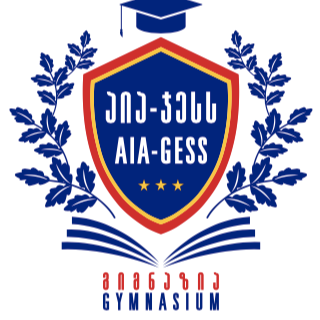

Bachelor's Degree: Computer Science, Kutaisi International University, 2022 -

School: Aia-Gess, 2010-2022 , 4.0 GPA

Contact Information: usanetashvili.work@gmail.com | Phone: +995 599 48 20 59
My coding experience dates back 5 years to when I first started writing code in C++. After that I learned
java
and have been working with it for 2 years. Currently, I work at JetBrains Academy, practicing my theoretical
knowledge
of Java while at the same time working on my teamwork and efficiency. My most recent projects include:
Currently, I am on a journey of learning everything I can to further boost my skills. I am enrolled in the IT hub academy's Java course, where I am improving my OOP, Project Management and teamwork skills. Because of my current profession, I am actively revising my theoretical knowledge of OOP and algorithms on a daily basis.
Java & Algorithm's topic writer
JetBrains Academy | 03/2023 - current
Wrote theoretical material and practice questions, including coding problems, for the JetBrains Academy on the HyperSkill platform about java & algorithms. Wrote testers in python for the aforementioned coding problems.